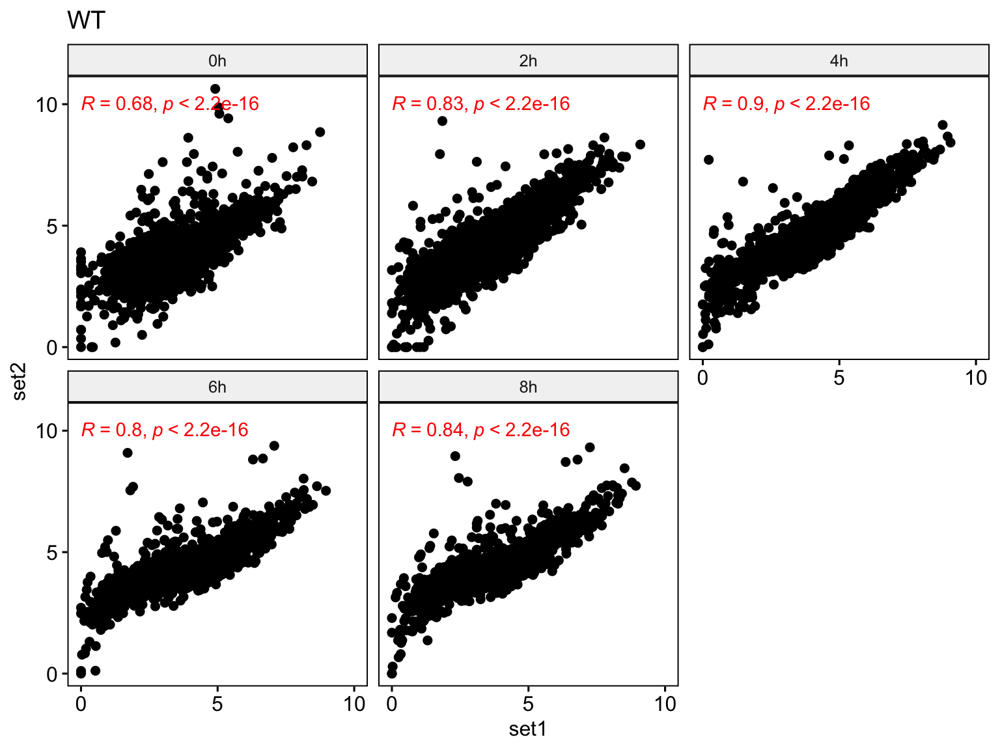
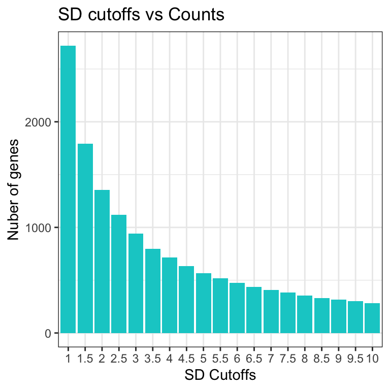
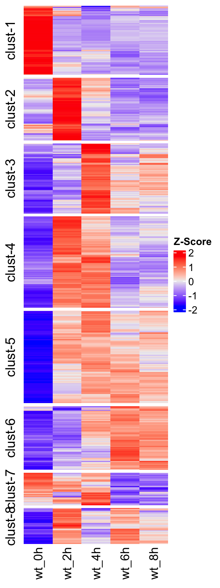

knitr::opts_chunk$set(message=FALSE, warning=FALSE)
library(magrittr)
source("../R/chip_analysis_functions.R")
library(EnrichedHeatmap)
library(ggplot2)
library(patchwork)CgXBP1_analysis
PolII ChIP-seq analysis
Generate normalised gene expression values (Commonly known as FPKM, RPKM, TPM, etc. ) for PolII data.
To generate the normalised expression values for each gene aligned reads were processed by MACS2 (Zhang et al., 2008), and BigWig files were generated using bedSort and bedGraphToBigWig commands from UCSC Kent utils (Kent et al., 2010). Samtools (version 1.9) was used to index the resultant BAM file and check for alignment statistics. Elongating RNAPII occupancy was then measured by normalizeToMatrix function from the R package EnrichedHeatmap. Normalized values then saved to .rds files (see R script generate_normalised_gene_expression_matrix_from_polII_chip_data.R) which are then used for downstream analysis and visualizations.
PolII occupancy heatmap (WT)
gff_file <- "../data/C_glabrata_CBS138_version_s02-m07-r06_features.gff"
gff <- GenomicFeatures::makeTxDbFromGFF(gff_file, metadata = T)
genes <- GenomicFeatures::genes(gff)
## prepare signal data
bw_files_dir <- c("../data/bw/WT")
bw_files <- list.files(bw_files_dir, pattern = "*set1.*bw", recursive = T, full.names = T)
names(bw_files) <- c("0.5h", "2h", "4h", "6h", "8h")
bw_files <- tibble::enframe(bw_files)
## generate normalised matrix in tidy way
wt_norm_mat <- bw_files %>%
dplyr::mutate(bw = purrr::map(value, function(ii) {
rtracklayer::import(ii)
})) %>%
dplyr::mutate(norm_matrix = purrr::map(bw, function(ii) {
nn <- EnrichedHeatmap::normalizeToMatrix(signal = ii,
target = genes,
value_column = "score",
smooth = T,
extend = 200)
return(nn)
}))
## plot hm list
wt_profile_heatmap <- get_enrichment_heatmap_list(
x = wt_norm_mat$norm_matrix,
col = circlize::colorRamp2(breaks = seq(0, 50, by = 10), colors = c("white", "#fdd49e", "#fdbb84", "#fc8d59", "#e34a33", "#b30000")),
names = wt_norm_mat$name,
titles = wt_norm_mat$name,
axis_name = c("-200", "TSS", "TES", "+200"),
axis_name_rot = 90 ,
axis_name_gp = gpar(fontsize = 10, fontface = "bold"),
pos_line = T,
top_annotation = HeatmapAnnotation(lines = anno_enriched(axis_param = list(side = "right", facing = "inside")))
)
ComplexHeatmap::draw(wt_profile_heatmap)Prepare data for normalised gene expression heatmap
# load FPKM matrix
wt_fpkm_mat <- readr::read_rds(file = "../data/rds/cg_polII_wt_thp1_sample_wise_fpkm.rds")
wt_fpkm_mat <- wt_fpkm_mat %>%
tidyr::gather("Cond", "FPKM", -gene_name) %>%
tidyr::separate(col = "Cond", sep = "_", into = c("organism", "strain", "condition", "timepoint", "replicate"))
xbp1_fpkm_mat <- readr::read_rds(file = "../data/rds/cg_polII_xbp1_thp1_sample_wise_fpkm.rds")
xbp1_fpkm_mat <- xbp1_fpkm_mat %>%
tidyr::gather("Cond", "FPKM", -gene_name) %>%
tidyr::separate(col = "Cond", sep = "_", into = c("organism", "strain", "condition", "timepoint", "replicate"))
## combine datasets
cg_polII_data <- dplyr::bind_rows(wt_fpkm_mat, xbp1_fpkm_mat) %>%
dplyr::group_by(gene_name, strain, condition, replicate) %>%
dplyr::mutate(stdev = sd(FPKM)) ## calculate sd within group across all timepoints . Make sure that number of elem in each group must be equal to time points.
dplyr::bind_rows(wt_fpkm_mat, xbp1_fpkm_mat) %>% dplyr::group_by(gene_name, strain, condition, replicate) %>%
dplyr::tally() %>%
dplyr::arrange(desc(n))# A tibble: 21,244 × 5
# Groups: gene_name, strain, condition [10,622]
gene_name strain condition replicate n
<chr> <chr> <chr> <chr> <int>
1 CAGL0A00105g wt thp1 set1 5
2 CAGL0A00105g wt thp1 set2 5
3 CAGL0A00105g xbp1 thp1 set1 5
4 CAGL0A00105g xbp1 thp1 set2 5
5 CAGL0A00110g wt thp1 set1 5
6 CAGL0A00110g wt thp1 set2 5
7 CAGL0A00110g xbp1 thp1 set1 5
8 CAGL0A00110g xbp1 thp1 set2 5
9 CAGL0A00116g wt thp1 set1 5
10 CAGL0A00116g wt thp1 set2 5
# ℹ 21,234 more rows## cross check the numbers (e.g number of unique genes, organism , strain, conditions etc.)
cg_polII_data %>% dplyr::ungroup() %>% dplyr::summarise_all(dplyr::n_distinct)# A tibble: 1 × 8
gene_name organism strain condition timepoint replicate FPKM stdev
<int> <int> <int> <int> <int> <int> <int> <int>
1 5311 1 2 1 5 2 106090 21237Correlation of PolII replicates using FPKM values (WT)
wt_data_for_corr <- cg_polII_data %>% dplyr::filter(strain == "wt") %>%
tidyr::pivot_wider(id_cols = c(gene_name, timepoint),
names_from = replicate,
values_from = FPKM)
plot_wt_cor <- wt_data_for_corr %>%
dplyr::mutate(set1 = log2(set1+1),set2 = log2(set2+1)) %>%
ggpubr::ggscatter(x = "set1",y = "set2", facet.by = "timepoint", cor.coef = T ,cor.coeff.args = list(col = "red"), nrow = 2 ) +
ggtitle("WT") +
scale_y_continuous(breaks = c(0,5,10)) + scale_x_continuous(breaks = c(0,5,10), limits = c(0,10))
plot_wt_cor
Correlation of PolII replicates using FPKM values (xbp1)
xbp1_data_for_corr <- cg_polII_data %>% dplyr::filter(strain == "xbp1") %>%
tidyr::pivot_wider(id_cols = c(gene_name, timepoint),
names_from = replicate,
values_from = FPKM)
plot_xbp1_cor <- xbp1_data_for_corr %>%
dplyr::mutate(set1 = log2(set1+1),set2 = log2(set2+1)) %>%
ggpubr::ggscatter(x = "set1",y = "set2", facet.by = "timepoint", cor.coef = T ,cor.coeff.args = list(col = "red"), nrow = 2 ) + ggtitle("xbp1∆") +
scale_y_continuous(breaks = c(0,5,10)) + scale_x_continuous(breaks = c(0,5,10), limits = c(0,10))
plot_xbp1_corPlot SD distributions for each replicate
sd_disturb_plot <- cg_polII_data %>%
dplyr::slice(1L) %>% ## get one elem of each group
ggplot() + geom_histogram(aes(x = stdev), binwidth = 1, fill = "cyan3", col = "black") + xlim(-1, 50) + facet_wrap(replicate ~ strain) + theme_bw()
sd_disturb_plotCount number of genes at several SD cutoffs (WT)
gp <- counts_by_sd_cutoffs(
x = wt_fpkm_mat %>%
tidyr::spread(timepoint, FPKM) %>%
dplyr::filter(replicate == "set1") %>%
dplyr::select_if(is.double),
y = paste(c(0, 2, 4, 6, 8), "h", sep = ""),
sds_cutoffs = seq(1, 10, by = 0.5)
)
gp + theme_bw()
PolII gene expression heatmap (WT)
## @@@@@@@@@@@@@@@@@@@@@@@@@@@@@@@@@@@@@@@@@@@@@@@@@@@@@@@@@@@@@@@@@@@@
#### zscore heatmap plot
## @@@@@@@@@@@@@@@@@@@@@@@@@@@@@@@@@@@@@@@@@@@@@@@@@@@@@@@@@@@@@@@@@@@@
sd_cut_off <- 2.25
strain_type <- "wt"
rep <- "set1"
fpkm_mat <- cg_polII_data %>%
dplyr::ungroup() %>%
dplyr::filter(stdev >= sd_cut_off, replicate == rep) %>%
dplyr::select(gene_name, strain, timepoint, FPKM) %>%
tidyr::unite(col = "ident", sep = "_", strain, timepoint, remove = F) %>%
dplyr::select(-timepoint) %>%
dplyr::group_by(gene_name)
zscore_mats <- fpkm_mat %>%
dplyr::group_by( strain, gene_name) %>%
dplyr::mutate(zscore = scale(FPKM)) %>%
dplyr::select(-FPKM) %>%
tidyr::spread(key = ident, value = zscore) %>%
dplyr::group_by(strain) %>%
dplyr::group_split() %>%
purrr::map(~ ..1 %>% dplyr::select(-strain) %>% TidyWrappers::tbl_remove_vars_NA_any())
# plot WT heatmap
hm_data <- zscore_mats[[1]] %>%
as.data.frame() %>%
tibble::column_to_rownames("gene_name")
seed <- 7173
set.seed(seed)
wt_km <- kmeans(hm_data, centers = 8)
table(wt_km$cluster)
1 2 3 4 5 6 7 8
166 149 164 219 85 217 151 77 wt_cl_order <- factor(wt_km$cluster, levels = c(3,2,1,6,4,7,8,5)) %>%
forcats::fct_relabel(~paste("clust",1:8, sep = "-"))
cg_wt_heatmap = ComplexHeatmap::Heatmap(hm_data, show_row_dend = F,
show_row_names = F,
cluster_columns = F,
show_column_dend = F,
row_split = wt_cl_order,
name = "Z-Score",
cluster_row_slices = F)
cg_wt_heatmap <- ComplexHeatmap::draw(cg_wt_heatmap)
PolII gene expression heatmap (xbp1)
hm_data <- zscore_mats[[2]] %>%
as.data.frame() %>%
tibble::column_to_rownames("gene_name")
seed <- 7173
set.seed(seed)
km <- kmeans(hm_data, centers = 7)
table(km$cluster)
1 2 3 4 5 6 7
400 329 131 506 229 249 302 cl_order <- factor(km$cluster, levels = c(4,6,1,5,3,2,7)) %>%
forcats::fct_relabel(~paste("clust",1:7, sep = "-"))
cg_xbp1_heatmap = ComplexHeatmap::Heatmap(hm_data, show_row_dend = F,
show_row_names = F,
cluster_columns = F,
show_column_dend = F,
row_split = cl_order,
name = "Z-Score",
cluster_row_slices = F)
cg_xbp1_heatmapPlot transcription factor (WT) Temporally
cg_tf <- readr::read_lines("../data/Cg_polII_wt_temporal_TFs.txt")
tf_hm_data <- wt_cl_order[names(wt_cl_order) %in% cg_tf] %>%
tibble::enframe(name = "gene_name", value = "clust") %>% dplyr::left_join(zscore_mats[[1]] , by = "gene_name") %>%
as.data.frame() %>%
tibble::column_to_rownames("gene_name")
cg_tf_heatmap = ComplexHeatmap::Heatmap(tf_hm_data[,-1], show_row_dend = F,
show_row_names = T,
row_names_gp = gpar(cex = 0.7),
cluster_columns = F,
show_column_dend = F,
column_title_gp = gpar(cex = 0.8),
row_split = tf_hm_data$clust,
name = "Z-Score",
column_title = "Temporally Expressed Transcription Factors",
cluster_row_slices = F)
cg_tf_heatmapPathway specific heatmap
Prepare data
excel_sheets = c("DNA_repair","iron_homeostasis","oxidative_stress","gluconeogenesis"
,"DNA_D_cc_arrest_in_resp_N_starv","TCA_cycle","autophagy","Aminoacid_biosynthesis")
gene_sets <- purrr::map(excel_sheets, ~readxl::read_excel("../data/pathway_genes.xlsx", sheet = ..1) %>% dplyr::select(gene_name, gene_symbol, cluster))
names(gene_sets) <- excel_sheets
# prepare data
pathway_genes_hm_data <- purrr::map(gene_sets, ~ ..1 %>%
dplyr::left_join(cg_polII_data %>% dplyr::ungroup() %>% dplyr::filter(strain == "wt"& replicate == "set1"), by = "gene_name") %>%
dplyr::group_by( strain, gene_name) %>%
dplyr::mutate(zscore = scale(FPKM)) %>%
dplyr::select(-FPKM) %>%
dplyr::ungroup() %>%
tidyr::pivot_wider(names_from = "timepoint", values_from = "zscore") %>%
dplyr::distinct() %>%
dplyr::select(c(gene_symbol, cluster, dplyr::ends_with("h"))) %>% as.data.frame() %>%
tibble::column_to_rownames(var = "gene_symbol")
)
# plot heatmap
pathway_heatmaps <- purrr::map(names(pathway_genes_hm_data) ,~ ComplexHeatmap::Heatmap(matrix = pathway_genes_hm_data[[..1]][,-1], row_split = pathway_genes_hm_data[[..1]]$cluster, cluster_row_slices = F, cluster_columns = F, show_row_dend = F, column_title = ..1, name = "Z-Score")
)
# plot
purrr::walk(pathway_heatmaps, ~ComplexHeatmap::draw(..1))